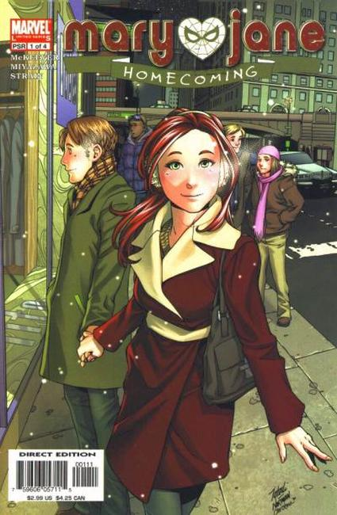

Whether she's going to school or hanging out with her friends at the Coffee Bean, Mary Jane Watson is always the life of the party. But what no one knows is that this gorgeous redhead's exuberant personality is a shell designed to make her forget about life's harsh realities. From her social life to her undying interest in becoming an actress to her crush on that costumed crime-fighter who swings along the New York City rooftops, it's clear that Mary Jane just wants to escape. Join MJ, Harry Osborn, Liz Allen, Flash Thompson and Harry's nerdy friend, Peter Parker, as they experience the thrilling highs and the crushing lows of high-school existence in this new, ongoing teen drama.

Series: 4 issues 2005
Publisher: Marvel
Written by Sean McKeever
Illustrations by Takashi Miyazawa
"The Cheating Thing" Thanks to overwhelming fan support, everyone's favorite redhead is back! After some bumps in the road, it seems MJ is finally over Spider-Man and excited to go to Homecoming with her boyfriend, Harry Osborn. But unless Harry's dad sees an improvement in his son's slipping grades, Harry can forget about ever seeing Mary Jane again. Add to this the fact that Liz Allen thinks best friend MJ and boyfriend Flash Thompson are fooling around behind her back, and you've got a recipe for the worst Homecoming ever! Pick up the newest installment in Marvel's most mischievous melodrama, and discover why Entertainment Weekly featured this electric teen drama in its Must List!